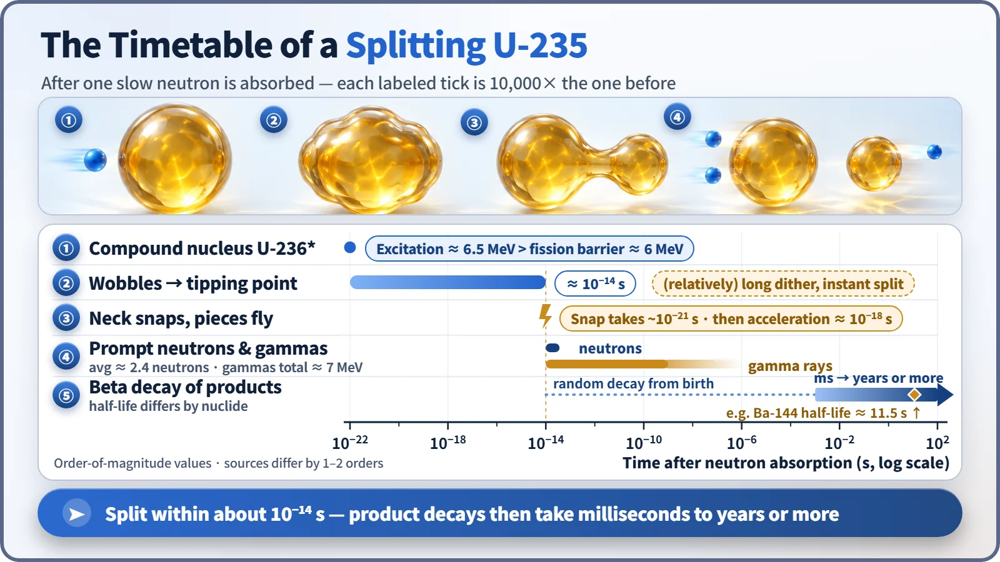
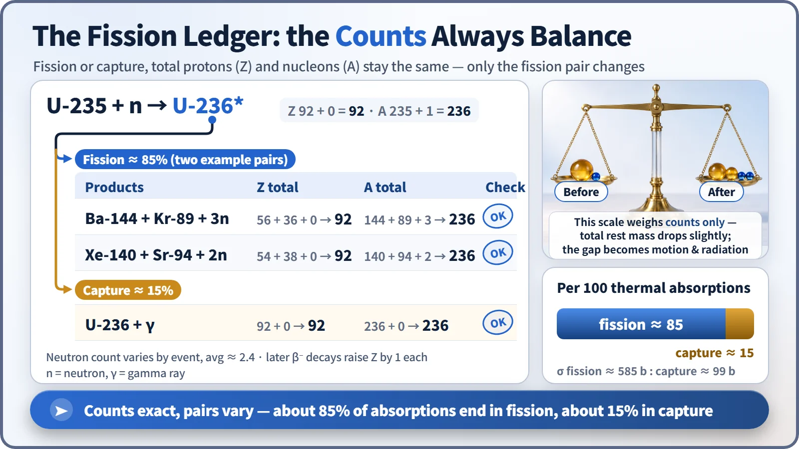

Nuclear Reactions & Fission · 029
Stretch, Stretch, Snap Like Mochi — The Step-by-Step Sequence of Uranium-235 Fission
The neutron is a key, not a hammer. Absorbed in an instant, it leaves an excited nucleus that stretches, pinches and snaps in about a hundred-trillionth of a second.
A uranium-235 nucleus does not shatter when a neutron hits it; it absorbs the neutron, becomes an excited uranium-236 nucleus, stretches, pinches and snaps in two. The pieces fly apart, shed about 2.4 prompt neutrons and gamma rays, then begin beta decay. About 15% of absorptions end in capture instead, with no fission at all. [1] [2]
Like pulling mochi apart
Take a fresh piece of mochi in both hands and pull slowly. The round lump stretches, the middle thins, and at some instant it snaps, each half springing back toward its own hand. A splitting uranium-235 nucleus looks surprisingly similar, except that the whole thing is over in a tiny fraction of a second. Let's go through it frame by frame.
Frame 1: a key, not a hammer
The neutron does not smash the nucleus like a bullet; it is absorbed into it. Its energy spreads through the whole nucleus in about 10⁻²² seconds, forming excited uranium-236, a "compound nucleus" sloshing with surplus energy.
As the neutron attaches, it releases binding energy of about 6.5 MeV. To split, uranium-236 must clear a hump called the fission barrier, about 6 MeV. Because 6.5 is more than 6, even a slow, barely moving neutron is enough, which is why the neutron is better thought of as a key than a hammer. Uranium-238, by contrast, gets only about 4.8 MeV of excitation from a neutron, short of its barrier, so slow neutrons do not split it easily. [3]
Frame 2: a long hesitation, then a sudden split
The excited nucleus does not split at once. It sloshes and changes shape until it reaches the point of no return, and this hesitation is the longest stage before separation: still only around 10⁻¹⁴ seconds. The stretched nucleus then pinches into a neck, and once past the point of no return the neck thins and snaps in about 10⁻²¹ seconds, millions of times faster than the hesitation.
The analogy has a limit: mochi is pulled from outside, but nobody pulls a nucleus. The electric repulsion among its 92 protons stretches it, while the nuclear force resists like surface tension and eventually loses. Only the stretching shape is mochi-like. [1]

Frame 3: what gets shed on the way out
At the snap, the two pieces are lumps packed with positive charge. Pushed apart by electric repulsion, they reach about 5% of the speed of light within about 10⁻¹⁸ seconds. Most of the roughly 200 MeV released by fission is the kinetic energy of these fragments.
The hot, excited fragments first release prompt neutrons, within about 10⁻¹⁴ seconds and about 2.4 per fission on average, then give off their remaining energy as prompt gamma rays. The fragments stop within about 10 μm in the fuel, and their kinetic energy becomes heat, which is why a reactor's heat is generated inside the fuel itself.
Frame 4: balancing the books
A common textbook example: uranium-235 + neutron → uranium-236* → barium-144 + krypton-89 + 3 neutrons. Protons: 56 + 36 = 92. Nucleons: 144 + 89 + 3 = 236. But the combination changes every time, xenon-140 and strontium-94 with 2 neutrons, for instance, and so does the neutron count, which is why 2.4 is an average.
| Outcome | Products | Protons (Z) | Nucleons (A) |
|---|---|---|---|
| Fission (example) | Ba-144 + Kr-89 + 3n | 56 + 36 = 92 | 144 + 89 + 3 = 236 |
| Fission (example) | Xe-140 + Sr-94 + 2n | 54 + 38 = 92 | 140 + 94 + 2 = 236 |
| Capture | U-236 + γ | 92 | 236 |
Not every absorption ends in fission. Of the uranium-235 nuclei that absorb a slow neutron, only about 85% split; the other 15% or so give off gamma rays and settle as uranium-236. This is capture: a nucleus that sheds its energy as gamma rays while sloshing misses its chance to split. Uranium-236 has a half-life of about 23.4 million years, so it accumulates in spent fuel. [2] [4]

Frame 5: an ending that is really a beginning
The fragments inherited too many neutrons, so they begin a series of beta decays, each turning a neutron into a proton. Krypton-89 has a half-life of about 3 minutes and barium-144 about 11.5 seconds. These decays, each at its own pace, are why a reactor keeps producing heat after shutdown, and the delayed neutrons that follow some of them, a few seconds to tens of seconds late, are the key to controlling a reactor.
Key takeaways
A slow neutron is absorbed and excites uranium-236 by about 6.5 MeV (about 10⁻²² s); the nucleus sloshes, necks and snaps (around 10⁻¹⁴ s); the pieces fly apart, releasing about 2.4 prompt neutrons and prompt gamma rays; then they beta-decay over milliseconds to years. About 15% of absorptions end in capture, with no fission. In one large power plant these events happen about 10²⁰ times every second, and a reactor is the machine that keeps that repetition calm and orderly.